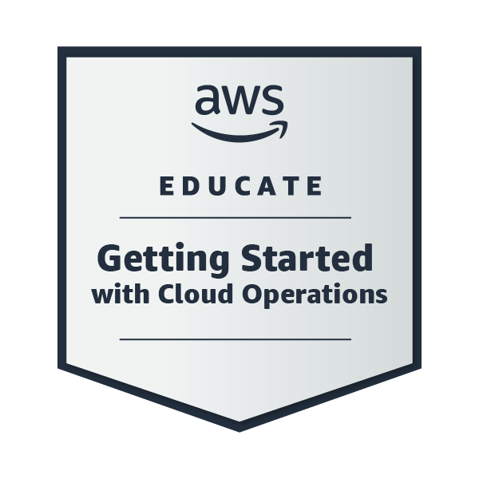
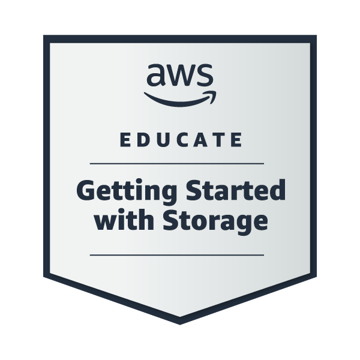
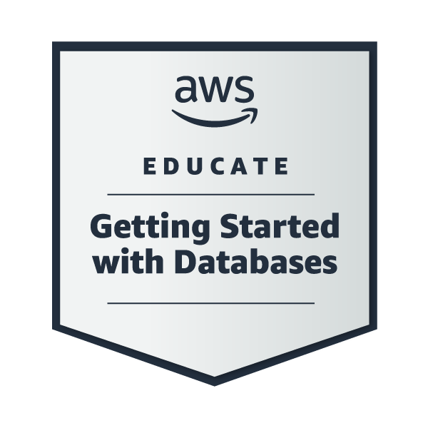

Ivan Rei Castro
✆ +63 976 381 8775
üìù Summary
Computer Science graduate specializing in Intelligent Systems, with academic exposure to AI topics including Computer Vision, Natural Language Processing, and Machine Learning. Developed practical skills in web development using (HTML, CSS, JavaScript), and (Git). Building a strong foundation in cloud computing with hands-on experience in core services such as compute, storage, networking, and databases. Completed guided labs on AWS and gained familiarity with concepts that apply across platforms like Azure and Google Cloud. Proactive and detail-oriented learner, eager to contribute to roles in cloud support, operations, engineering, or infrastructure teams.
üõ†Ô∏è Technical Skills
- Cloud: Hands-on AWS (EC2, S3, RDS, IAM, VPC, CloudFormation, CloudWatch), foundational knowledge of cloud compute, storage, and database services.
- Programming & Scripting: Python, Dart, Java, JavaScript, Linux shell commands
- App & Web Development: Flutter, HTML, CSS, responsive design, WordPress
- Tools & Platforms: Git, GitHub, Figma
üöÄ Projects
EaTanong Heartwise - Mobile AI Health Tracking App
Flutter, Tensorflow, TFLite, Hive- Built a Flutter app for food, exercise, hydration, medication, and blood pressure tracking.
- Integrated TensorFlow Lite for AI-powered food image classification
- Used Hive and Provider for local storage, state management, and real-time UI updates.
AWS Hands-On Labs - Guided labs via AWS Educate and Stephane Maarek’s AWS CCP course.
Amazon EC2, S3, RDS, IAM, CloudFormation, CloudWatch and VPC- Configured and deployed cloud resources such as EC2 instances, S3 buckets, RDS databases, IAM roles, and VPC networks.
- Used CloudFormation to automate infrastructure deployment and CloudWatch to monitor resources with real-time alarms.
üíº Experience
WordPress Developer
ROC.PH Digital Marketing Services- Created wireframes and user interface designs in Figma to support client website projects.
- Built responsive web pages in WordPress by applying front-end design principles and customizing themes.
- Gained practical experience in UI/UX design, web layout structuring, and WordPress-based development.
üéì Education
De La Salle University - Dasmariñas
Bachelor of Science in Computer Science with Specialization in Intelligent Systemsüìú Certifications
AWS Knowledge: Cloud Essentials
Amazon Web Services Training and Certification

AWS Educate Getting Started with Cloud Ops
Amazon Web Services Training and Certification
AWS Educate Introduction to Cloud 101
Amazon Web Services Training and CertificationAWS Educate Getting Started with Compute
Amazon Web Services Training and Certification

AWS Educate Getting Started with Storage
Amazon Web Services Training and Certification

AWS Educate Getting Started with Databases
Amazon Web Services Training and Certification
AWS Educate Getting Started with Security
Amazon Web Services Training and Certification
AWS Educate Getting Started with Networking
Amazon Web Services Training and CertificationAWS Educate Getting Started with Serverless
Amazon Web Services Training and Certification
Linux Essentials
Cisco